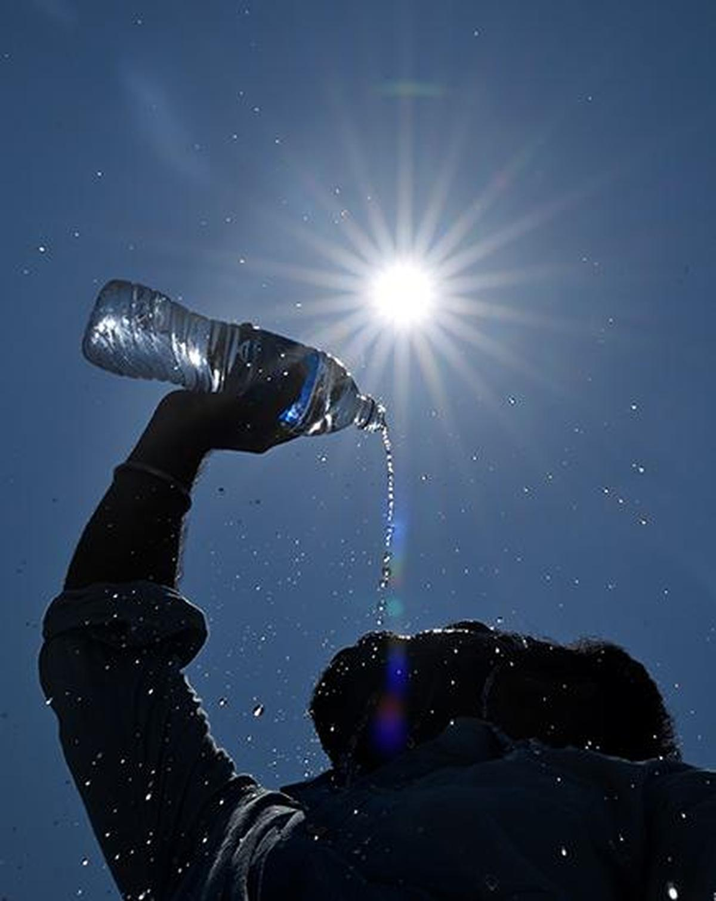

Indian cities could see far higher temperature rise than projected, says study
This means global warming is set to hit smaller Indian cities much harder than previously predicted; in Patiala, for instance, temperatures could rise at double the rate projected for surrounding rural areas.
Climate models may be underestimating — by anything from half to two degrees — how much hotter India’s non-metropolitan cities can get from global warming relative to rural areas, according to a study published Wednesday (February 4, 2026).
The researchers, from the University of East Anglia in the United Kingdom, analysed how temperatures would rise in 104 “medium-sized” cities in tropical and sub-tropical regions under a 2°C warming scenario, the emissions path that the globe is currently on. Rather than asking how hot regions become on average, the study asks a different question: how much faster do cities warm than their surrounding countryside?

Back to Home